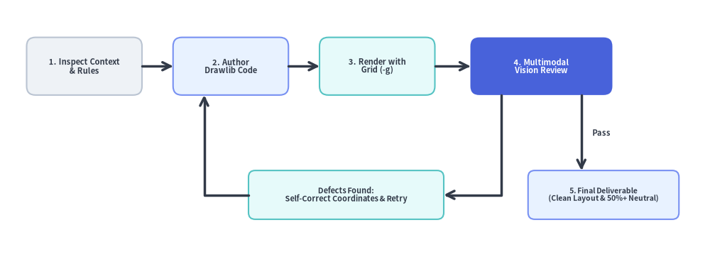
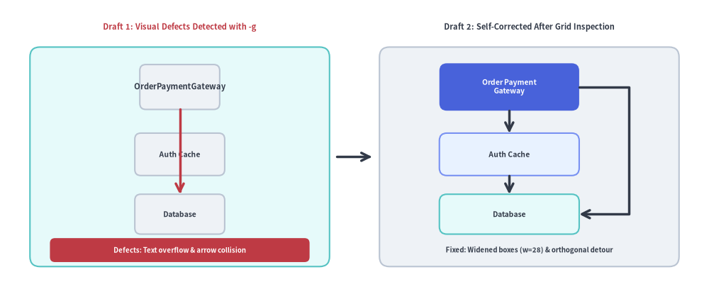

The Autonomous Multimodal Visual Feedback Loop
A key strength of modern AI coding assistants equipped with vision tools (such as Claude 3.5 Sonnet, Gemini 1.5 Pro, and GPT-4o) is the ability to visually inspect their own drawings before presenting them to the user.
Drawlib is engineered specifically to empower this autonomous self-correction loop.

Source Code
from drawlib.canvas import save, setup
from drawlib.icons import phosphor
from drawlib.lines import line, lines
from drawlib.shapes import rectangle
from drawlib.styles import Styles
from drawlib.text import text
setup(width=128, height=58)
# Top Row: Stages 1 to 4
stages = [
(17.5, "1. Inspect", "Code & Rules", Styles.Neutral, Styles.DarkBold, Styles.Dark, phosphor.magnifying_glass, Styles.PrimaryBold),
(47.0, "2. Author", "Drawlib Code", Styles.PrimaryNeutral, Styles.DarkBold, Styles.Dark, phosphor.code, Styles.PrimaryBold),
(76.5, "3. Render", "Grid (-g)", Styles.SecondaryNeutral, Styles.DarkBold, Styles.Dark, phosphor.grid_four, Styles.PrimaryBold),
(108.0, "4. Vision Review", "Multimodal Check", Styles.PrimaryFlat, Styles.WhiteBold, Styles.White, phosphor.eye, Styles.WhiteBold),
]
for sx, title, sub, st, tst, sub_st, icon_fn, icon_st in stages:
w = 29 if sx > 100 else 25
rectangle((sx, 43.0), width=w, height=21, style=st.patch(shape_r=2.0))
icon_fn((sx, 48.5), width=4.6, style=icon_st)
text((sx, 41.5), title, style=tst.patch(text_size=10.5))
text((sx, 36.2), sub, style=sub_st.patch(text_size=10.0))
# Forward Connectors (1 -> 2 -> 3 -> 4)
line((30.0, 43.0), (34.5, 43.0), arrow_head="->", style=Styles.DarkBold)
line((59.5, 43.0), (64.0, 43.0), arrow_head="->", style=Styles.DarkBold)
line((89.0, 43.0), (93.5, 43.0), arrow_head="->", style=Styles.DarkBold)
# Decision Branch A: Defects Found -> Loop Back to Step 2
rectangle(
(61.0, 14.0),
width=38,
height=13,
style=Styles.SecondaryNeutral.patch(shape_r=1.5),
text="Defects Found:\nAdjust Coords & Retry",
text_style=Styles.DarkBold.patch(text_size=10.2),
)
lines([(94.5, 32.5), (94.5, 14.0), (80.0, 14.0)], arrow_head="->", style=Styles.DarkBold)
lines([(42.0, 14.0), (36.0, 14.0), (36.0, 32.5)], arrow_head="->", style=Styles.DarkBold)
# Decision Branch B: Pass -> Step 5 Final Deliverable
rectangle((110.5, 14.0), width=24, height=13, style=Styles.PrimaryNeutral.patch(shape_r=1.5))
phosphor.check_circle((101.8, 14.0), width=4.0, style=Styles.PrimaryBold)
text((112.8, 14.0), "5. Deliverable\nClean Layout", style=Styles.DarkBold.patch(text_size=10.0))
line((114.0, 32.5), (114.0, 20.5), arrow_head="->", style=Styles.DarkBold)
text((116.5, 26.5), "Pass", style=Styles.DarkBold.patch(text_size=10.2, halign="left"))
save()
1. The Autonomous Feedback Cycle
Stage 1: Inspect Context
Rather than imagining an architecture from thin air, the agent inspects real repository source code (models.py, API routes, microservice configurations).
Stage 2: Prototype in Isolated Scratch Space (.drawlib/scratch/)
The agent drafts the drawing prototype code in an isolated scratch file (.drawlib/scratch/test_diagram.py) or tests a specific block instead of altering production assets blindly. Do NOT pollute the project root; ensure .drawlib/ is in .gitignore.
Stage 3: Headless Render with Coordinate Grid (-g)
The agent executes drawlib show with the -g flag to render the diagram overlaid with coordinate axes, tick marks, and numeric coordinate labels (targeting embedded Markdown blocks by their explicit file: name rather than fragile numeric index):
# Render an embedded Markdown block by explicit filename with coordinate grid (Recommended):
uv run drawlib show docs_src/architecture.md service_mesh.png -g -o .drawlib/scratch/preview.png
# Or render a standalone Python script with coordinate grid:
uv run drawlib show .drawlib/scratch/test_diagram.py -g -o .drawlib/scratch/test_diagram.png
Stage 4: Multimodal Inspection
Using vision inspection tools (such as view_file or an image viewer), the agent examines the rendered output for five common visual defects:
- Text Overflow & Clipping: Did a long service name or method label spill outside its enclosing box?
- Line & Arrow Overlaps: Are orthogonal lines colliding awkwardly, or are arrowheads obscured by shapes?
- Canvas Margin Starvation: Are outermost elements pushed right up against the canvas boundary with zero padding?
- Color Contrast: Is dark text placed over dark shape fills, or light text on pale backgrounds?
- Color Overuse (Rainbow Chaos): Are all boxes colored with saturated fills? Ground 50%+ of nodes in calm neutral or tinted-neutral styles (
Styles.Neutral,Styles.NeutralFlat,Styles.PrimaryNeutral,Styles.SecondaryNeutral) and reserve saturated hero fills (Styles.PrimaryFlat) for 1–2 key focal points.
Stage 5: Iterative Refinement
Because the coordinate grid directly reveals the exact (x, y) location of every visual defect, the agent can adjust coordinates deterministically (e.g. "Move box X from 45.0 to 52.0 to eliminate overlap") rather than guessing.

Source Code
from drawlib.canvas import save, setup
from drawlib.icons import phosphor
from drawlib.lines import line, lines
from drawlib.shapes import rectangle
from drawlib.styles import Styles
from drawlib.text import text
setup(width=128, height=58)
# Left Panel: Draft 1 with Visual Defects
phosphor.warning((10.5, 52.5), width=4.4, style=Styles.DangerBold)
text((35.5, 52.5), "Draft 1: Visual Defects (-g)", style=Styles.DangerBold.patch(text_size=10.8))
rectangle((32, 26.5), width=54, height=44, style=Styles.SecondaryNeutral.patch(shape_r=2.0))
# Narrow box (width=18) causing label overflow
rectangle(
(32, 40.5),
width=18,
height=9.0,
style=Styles.Neutral.patch(shape_r=1.2),
text="OrderPaymentGateway",
text_style=Styles.DarkBold.patch(text_size=10.2),
)
rectangle(
(32, 27.5),
width=22,
height=8.2,
style=Styles.Neutral.patch(shape_r=1.2),
text="Auth Cache",
text_style=Styles.DarkBold.patch(text_size=10.2),
)
rectangle(
(32, 15.5),
width=22,
height=8.0,
style=Styles.Neutral.patch(shape_r=1.2),
text="Database",
text_style=Styles.DarkBold.patch(text_size=10.2),
)
# Colliding arrow cutting straight through intermediate node
line((32, 36.0), (32, 19.5), arrow_head="->", style=Styles.DangerBold)
rectangle(
(32, 7.8),
width=48,
height=5.2,
style=Styles.DangerFlat.patch(shape_r=1.0),
text="Overflow & Arrow Collision",
text_style=Styles.WhiteBold.patch(text_size=10.0),
)
# Center Transition Arrow
line((60.5, 26.5), (67.5, 26.5), arrow_head="->", style=Styles.DarkBold)
# Right Panel: Draft 2 Self-Corrected
phosphor.check_circle((74.5, 52.5), width=4.4, style=Styles.PrimaryBold)
text((99.5, 52.5), "Draft 2: Self-Corrected", style=Styles.DarkBold.patch(text_size=10.8))
rectangle((96, 26.5), width=54, height=44, style=Styles.Neutral.patch(shape_r=2.0))
rectangle(
(92, 40.5),
width=30,
height=9.5,
style=Styles.PrimaryFlat.patch(shape_r=1.5),
text="Order Payment\nGateway",
text_style=Styles.WhiteBold.patch(text_size=10.2),
)
rectangle(
(92, 27.5),
width=30,
height=8.2,
style=Styles.PrimaryNeutral.patch(shape_r=1.5),
text="Auth Cache",
text_style=Styles.DarkBold.patch(text_size=10.2),
)
rectangle(
(92, 15.5),
width=30,
height=8.0,
style=Styles.SecondaryNeutral.patch(shape_r=1.5),
text="Database",
text_style=Styles.DarkBold.patch(text_size=10.2),
)
# Clean step connectors & orthogonal detour routing around intermediate node
line((92, 35.75), (92, 31.6), arrow_head="->", style=Styles.DarkBold)
line((92, 23.4), (92, 19.5), arrow_head="->", style=Styles.DarkBold)
lines([(107, 40.5), (116, 40.5), (116, 15.5), (107, 15.5)], arrow_head="->", style=Styles.DarkBold)
text((96, 7.8), "Widened (w=30) & Detour", style=Styles.DarkBold.patch(text_size=10.0))
save()
Stage 6: Macro-Page Browser HTML Verification (1280×920 Viewport)
For illustrated documentation (docs_src/ or doc_src/), inspecting a standalone PNG in isolation is not enough—a diagram rendered at 1000px can still appear unreadable in HTML if capped by a narrow pixel width (600px) or authored with text_size=8.0.
Before delivering, the agent compiles the HTML site (./docs_src/build.sh), validates links (uv run drawlib serve docs_html/ --check), and inspects a 1280×920 headless Chromium screenshot of the rendered HTML page to verify:
- Above-the-Fold Top Hero (
Lines 5–15,fold-code): The# Title, lead paragraph, and complete Top Hero diagram are visible immediately without scrolling. - Prose-to-Diagram Font Harmony (
720ptCanvas Law): Because Drawlib maps every canvas width to720pt($\text{CSS px} = \text{text_size} \times \text{Width} / 720$), omitting narrowpxwidth caps and keepingtext_size >= 10.0ensures diagram labels match16pxHTML body prose.
Tip: Run
uv run drawlib rules show review-guidefor the complete 3-Stage Autonomous Review & Self-Correction manual, including theCentervs.Bottom-Leftcoordinate anchor reference table.
2. Visual Self-Repair Checklist
When performing a multimodal self-review, check off each item in this matrix:
| Verification Area | Common Visual Flaw | Deterministic Fix |
|---|---|---|
HTML Typography (720pt Law) |
Diagram labels look tiny next to 16px HTML prose |
Omit narrow pixel widths (500px/600px) on fences, set text_size >= 10.0 (standard 10.5–12.0), and widen boxes by 20%–30%. |
| Above-the-Fold Hero | Reader sees only a wall of text or a 50-line code block on page load | Place the first diagram at Lines 5–15 using fold-code and combine phosphor/gcp icons with SmartArts/Diagrams. |
| Anchor Semantics | Table, BarChart, or FlowDiagram shifted off-center to the right |
Remember shapes/text/icons use Center (cx, cy), whereas SmartArts/Charts/Diagrams/Graphs use Bottom-Left (x0, y0) (x0 = (W - width) / 2). |
| Canvas Padding | Outer nodes or labels touching canvas perimeter | Increase canvas dimensions in setup(width=..., height=...) or inset outer shapes by at least 4–8 units from all edges. |
| Node Alignment | Jagged, slightly crooked horizontal or vertical connection lines | Ensure horizontally aligned nodes share the exact same y coordinate and vertically stacked nodes share the exact same x coordinate. |
| Label Breathing Room | Multi-line text touching or overflowing card borders | Increase box width / height or insert explicit \n line breaks. |
| Arrowheads & Edge Labels | Arrowhead clipped inside target node, or parallel edge labels colliding | Add padding=1.5 or 2.0 on connectors, route return paths onto distinct sides (from_side="bottom", to_side="bottom"), or use label_offset=(dx, dy). |
| 50%+ Neutral Baseline | Confusing multi-color "rainbow" diagram where every node competes for attention | Ground 50%+ of shapes in calm neutral styles (Styles.Neutral, Styles.PrimaryNeutral, Styles.SecondaryNeutral), use Styles.MutedDashed for boundary containers, and reserve saturated hero fills (Styles.PrimaryFlat) for 1–2 focal components. |
| Text Luminance Contrast | Dark text over dark Flat fill or white text over light Neutral fill |
Always pair saturated Flat fills (Styles.PrimaryFlat, Styles.DangerFlat) with text_style=Styles.WhiteBold, and light Neutral fills with Styles.DarkBold or Styles.Dark. |